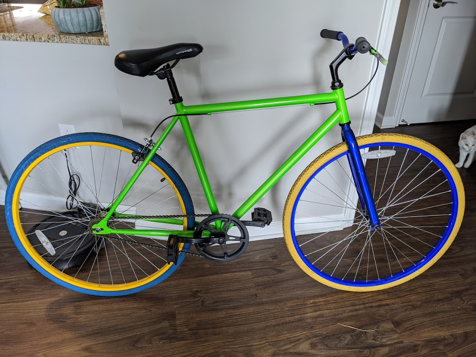
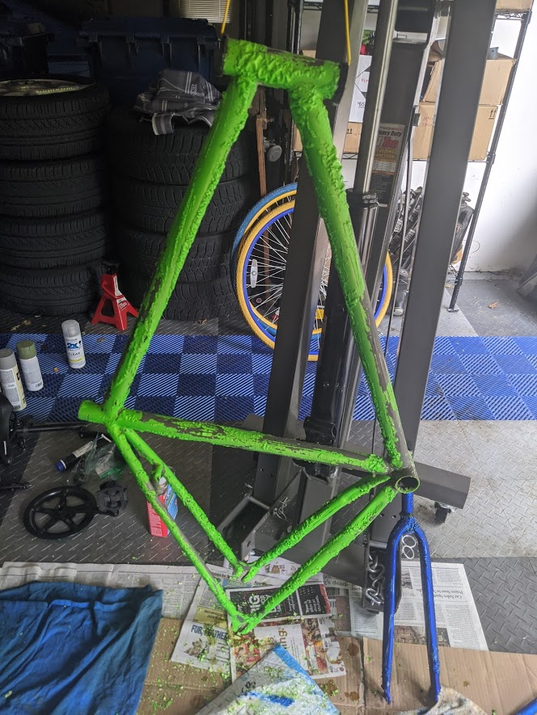
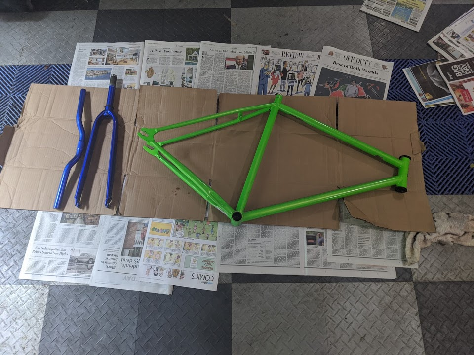

[09-10-2020] | Walmart Track Bike Build
In 2014 I bought 2 Kent Thruster 700c track bikes from a guy on Craigslist. They looked like metallic rainbow puke.
They then sat in my parent's garage until the 2020 COVID pandemic. After I rebuilt my Trek 4300, I decided to give the whole bike rebuild thing a second pass to see where I could get.
I took the best parts between both of the frames, and after a 2 month hiatus from mom and dad's garage, the bikes returned to their home.
|  |  |
The components on this thing are pot metal and whatever is the literal cheapest thing you can get away with. I'm fairly certain they retailed for $100 total. That's $100 for
a frame, a fork, 2 brakes, crankset, bottom bracket,
wheels, tires, tubes, valves, brake cables, stem,
bars, reflectors, hardware, a cog, a freewheel, seatpost,
saddle, brake pads, hubs, assorted bearings, and spokes.
That's like $5 per component on average. The whole frame is bent to the left somehow and always leans that way.
Luckily the disassembly went a little easier after I rebuilt the Trek mountain bike. I didn't have any special tools to take the bottom bracket off, and I had to reuse the pickle fork method to get the crank arms off.
The painting process took 4 days:
Day 1 | Apply aircraft strippper, wait 30-45 minutes, strip paint
Day 2 | Reapply stripper, wire brush hard to remove spots, prime frame
Day 3 | Spray Rustoleum camo paint on frame and Rustoleum black enamel on fork
Day 4 | Spray clear over frame and fork
The stripping process was a pain with the weak aircraft stripper that's sold at the parts store. I tried to burn some of the paint off with a blowtorch but obviously that didn't work. The acute angled joints were really hard to get into. I gave much less time to the fork than the frame, and the enamel on the fork worked great with the bad prep job I did.
During the whole process I upgraded a couple things. The quill stem was replaced with a 1" to 1 1/8" adapter and 1 1/8" to 1" stem. I didn't go 1 1/8 stem in case I wanted to reuse the risers, but this ended up biting me because I went to bullhorns after the drops and never used the risers again.
I rewrapped the drops 3 times trying to get a better idea how the process works. I went to Cinelli gray gel cork tape when I moved to the bullhorns, and still am impressed at how much better the quality is. The Amazon white bar tape on the drops I switched to is very squishy and cheap feeling compared to the Cinelli tape.
I don't know how many miles I've put on this bike so far, but it's probably 300 and climbing. There's horror stories of the bottom bracket failing, the lock ring loosening, and the cranks snapping. My only complaint so far is the frame bend to the left that keeps it leaning over. I'm definitely glad I spent the time to tear this thing down and learn about it, and it's given me many miles of fun for very cheap.